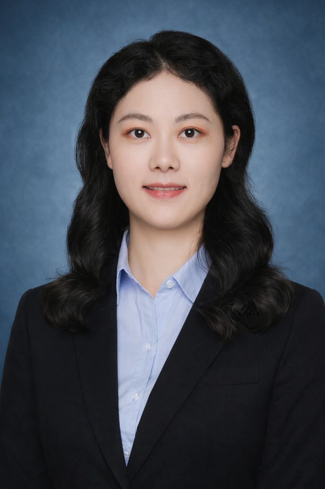

PhD Candidate in Operations Research, Rutgers University
AI • Optimization • Quantitative Modeling
I am a 3rd-year PhD Candidate in Operations Research at Rutgers University, expected to graduate in May 2027. I work at the intersection of machine learning, mathematical optimization, and quantitative modeling.
I build and deploy deep learning models (CNNs, Transformers, diffusion models) and integrate them with large-scale optimization (Benders, ADMM) for decision-making under uncertainty. My technical focus spans neural network design, surrogate modeling, and scalable decomposition algorithms.
I have hands-on research and deployment experience—from structured prediction and econometric estimation at MIT to production AI systems at industry. My work has led to top-tier publications (NeurIPS, AISTATS) and patent disclosures.
Ph.D. Candidate in Operations Research · GPA: 3.81/4.0
Advisors: Jonathan Eckstein (Rutgers), Mark Rodgers (Columbia Business School)
Research: Stochastic programming, decomposition (Benders, ADMM), ML-integrated MIP; DL coursework (Transformers, GANs, diffusion)
M.Eng. in Operations Research · GPA: 3.84/4.0
Operations Research, Optimization, Mathematical Programming
B.Sc. in Mathematics and Applied Mathematics · GPA: 3.97/4.0
NeurIPS 2025
AISTATS 2023
Under Review
Deep Learning (CNNs, Transformers), PyTorch, XGBoost
Stochastic Programming, Mixed-Integer Programming, ADMM, Benders Decomposition, ML-integrated optimization
Python, C++, R, MATLAB, SQL · Gurobi, Git, Linux/HPC
Rutgers Business School (2025)
2024
Recognized for developing AI algorithms for molecular target detection and optimizing text block detection models with PyTorch.
View ProjectFudan University (2022)
I'm actively seeking Summer 2026 internship opportunities in AI Research and Machine Learning. Let's connect!